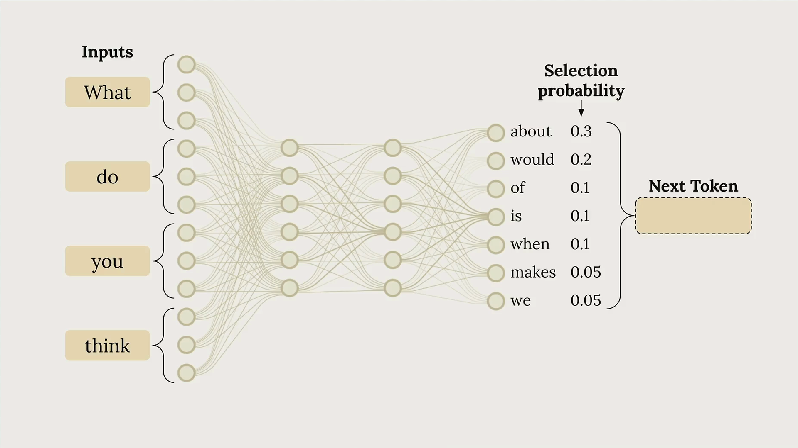
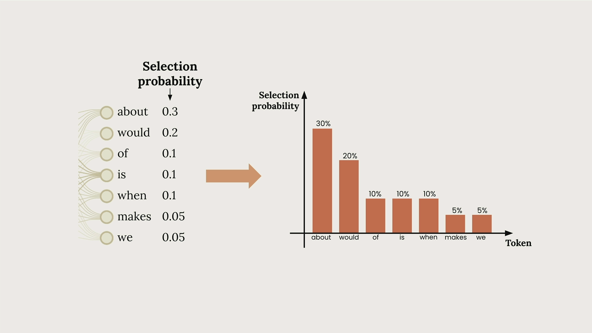
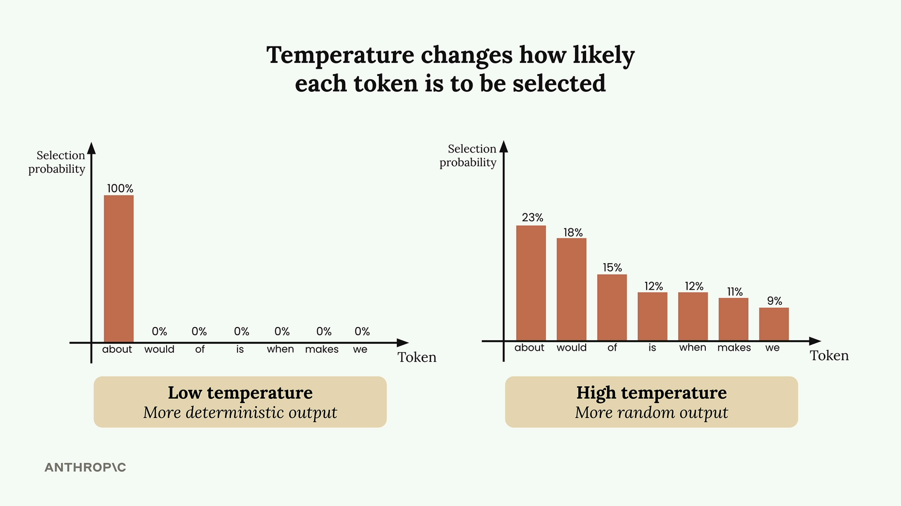
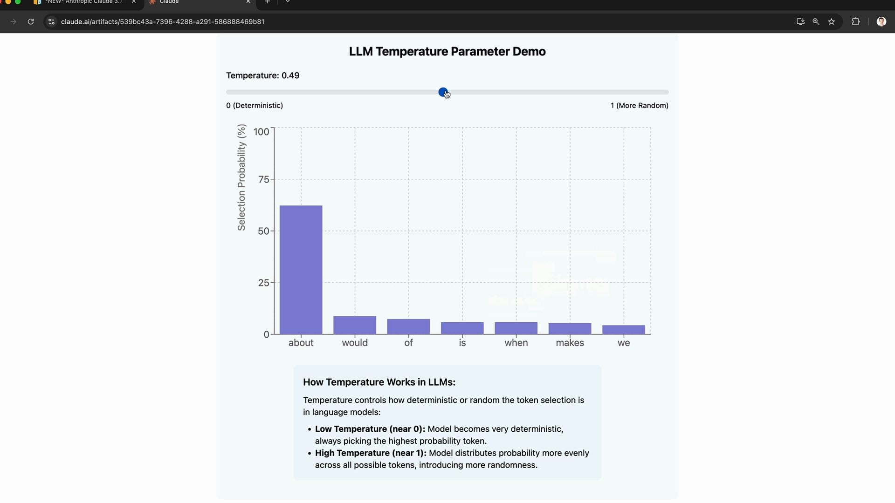
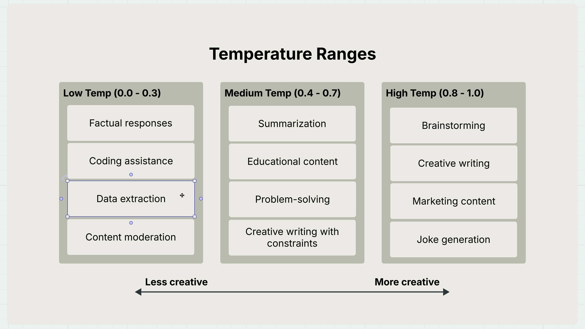

온도(Temperature)
온도(Temperature)는 Claude의 응답이 얼마나 예측 가능하거나 창의적일지를 제어하는 강력한 파라미터입니다. 이를 효과적으로 활용하는 방법을 이해하면 AI 애플리케이션을 크게 개선할 수 있습니다.
Claude의 텍스트 생성 방식
온도에 대해 알아보기 전에, Claude의 텍스트 생성 과정을 이해하면 도움이 됩니다. "어떻게 생각하세요?"와 같은 프롬프트를 Claude에 전송하면, 세 가지 핵심 단계를 거칩니다:
- 토큰화(Tokenization) - 입력을 더 작은 단위로 분할
- 예측(Prediction) - 가능한 다음 단어에 대한 확률 계산
- 샘플링(Sampling) - 해당 확률에 기반하여 토큰 선택

이 예시에서 Claude는 "about"에 30%, "would"에 20%, "of"에 10% 등의 확률을 부여할 수 있습니다. 그런 다음 모델은 하나의 토큰을 선택하고, 완전한 문장을 구성하기 위해 이 전체 과정을 반복합니다.

온도(Temperature)의 역할
온도는 0과 1 사이의 소수 값으로, 이 선택 확률에 직접적인 영향을 미칩니다. Claude 응답의 "창의성 다이얼"을 조정하는 것과 같습니다.

낮은 온도(0에 가까울 때)에서 Claude는 매우 결정론적으로 동작하여 거의 항상 가장 높은 확률의 토큰을 선택합니다. 높은 온도(1에 가까울 때)에서는 확률이 여러 선택지에 더 고르게 분산되어 더 다양하고 창의적인 출력이 나타납니다.
온도 인터랙티브 데모
Claude의 인터랙티브 데모를 통해 온도의 작동 방식을 확인할 수 있습니다. 온도 슬라이더를 조정할 때 확률 분포가 어떻게 변하는지 살펴보세요:

온도 0.0에서는 "about"이 100% 확률을 가져 완전히 결정론적입니다. 온도 1.0에서는 확률이 가능한 모든 토큰에 더 고르게 분산되어 무작위성과 창의성이 도입됩니다.
적절한 온도 선택하기
작업마다 적합한 온도 범위가 다릅니다:

낮은 온도 (0.0 - 0.3)
- 사실적 응답
- 코딩 지원
- 데이터 추출
- 콘텐츠 모더레이션
중간 온도 (0.4 - 0.7)
- 요약
- 교육 콘텐츠
- 문제 해결
- 제약이 있는 창의적 글쓰기
높은 온도 (0.8 - 1.0)
- 브레인스토밍
- 창의적 글쓰기
- 마케팅 콘텐츠
- 유머 생성
코드에서 온도 구현하기
채팅 함수에 온도 지원을 추가하는 것은 간단합니다. 기존 함수를 수정하는 방법은 다음과 같습니다:
def chat(messages, system=None, temperature=1.0):
params = {
"model": model,
"max_tokens": 1000,
"messages": messages,
"temperature": temperature
}
if system:
params["system"] = system
message = client.messages.create(**params)
return message.content[0].text
핵심 변경 사항은 temperature=1.0을 파라미터로 추가하고 params 딕셔너리에 "temperature": temperature를 포함하는 것입니다.
온도 효과 테스트하기
온도의 작동 방식을 확인하려면 다양한 설정으로 영화 아이디어를 생성해 보세요:
# Low temperature - more predictable
answer = chat(messages, temperature=0.0)
# High temperature - more creative
answer = chat(messages, temperature=1.0)온도 0.0에서는 "시간 여행하는 고고학자가 고대 유물 도난을 막아야 한다"와 같은 응답을 일관되게 받을 수 있습니다. 온도 1.0에서는 주제, 등장인물, 줄거리 요소에서 훨씬 더 다양한 변형을 볼 수 있습니다.
핵심 정리
온도는 다른 출력을 보장하지 않습니다 - 단지 그 확률을 변경할 뿐입니다. 높은 온도에서도 Claude는 때때로 유사한 응답을 생성할 수 있습니다. 핵심은 특정 사용 사례에 맞는 온도를 선택하는 것입니다:
- 일관되고 사실적인 응답이 필요하다면? 낮은 온도를 사용하세요
- 창의적인 브레인스토밍을 원한다면? 온도를 높이세요
- 그 사이 어딘가라면? 중간 온도는 대부분의 일반적인 작업에 잘 맞습니다
온도는 특정 요구사항에 맞게 Claude의 동작을 미세 조정하기 위해 조정할 수 있는 가장 실용적인 파라미터 중 하나입니다.